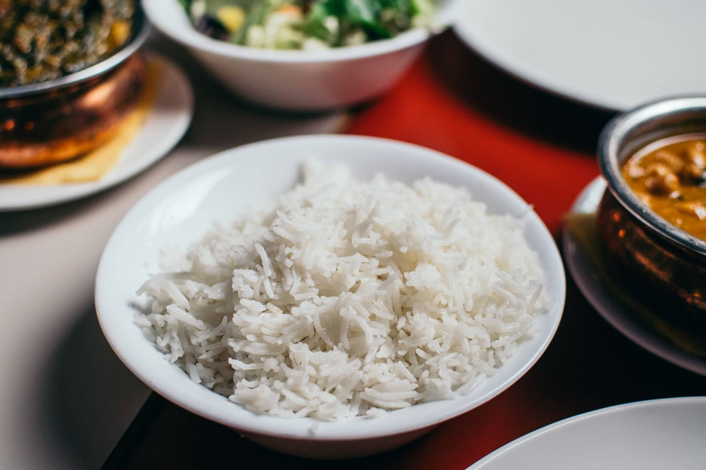

飯
白飯
米飯是一種用稻米與水煮成的食物。米飯是亞洲國家最主要的糧食。米飯製法為一杯米加一杯到一杯半的水，煮出來的米適當的膨脹，裡面全熟即成。
米飯的面世，可追溯至粥。由於烹煮粥水控制水量的要求比米飯低，上古的華夏民眾後來慢慢掌握不同水量時的烹煮效果，就發展出較飽滿的米飯。現代由於打磨穀粒的技術比古代越趨先進，因此民眾食用的米飯也漸漸由粗硬難吃的糙米改為口感軟糯的白米，但已失去存於糙米表面即穀糠的各種營養，雖然幾乎只剩下澱粉質等糖分，不過身為主食以增加飽足感為第一優先，其餘養份可由配菜解決。